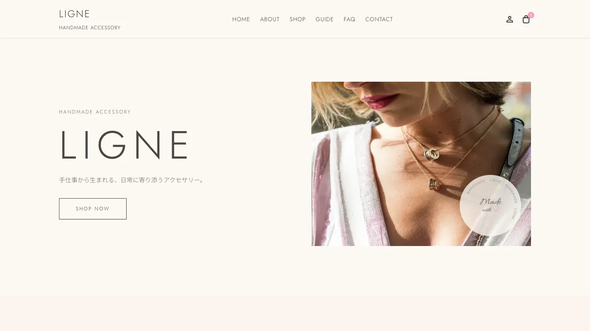
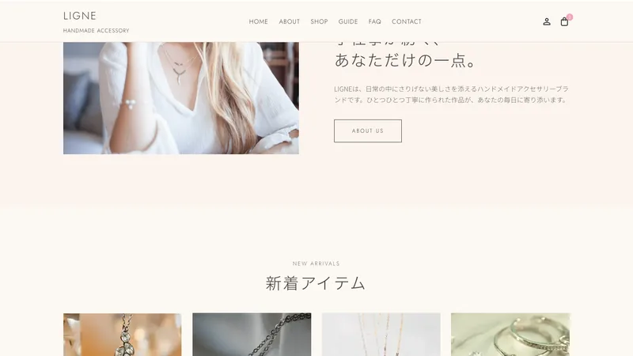
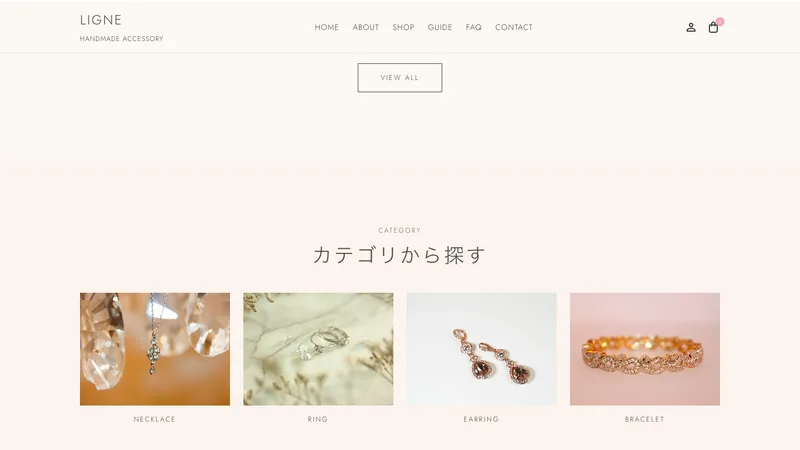
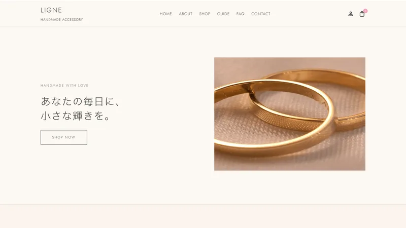

Case Study — E-Commerce
Handmade AccessoryEC Site
一点ずつ手作りされるアクセサリーのECサイト。作品の世界観を損なわないまま、訪れた人が迷わず購入までたどり着ける——その両立を目指しました。

Overview
概要
| クライアント | ハンドメイドアクセサリー作家（個人事業主） |
|---|---|
| 種別 | ECサイト |
| 担当範囲 | 情報設計 / デザイン / フロントエンド実装 |
| 期間 | 約2ヶ月 |
| 使用技術 | HTML / CSS(SCSS) / JavaScript |
Client & Target
クライアントとターゲット
クライアントは、一点ずつ手作業でアクセサリーを制作する作家さん。これまではSNSと外部マーケットを中心に販売してきましたが、「自分の世界観をまとめて伝えられる場所がほしい」というご相談からはじまりました。
届けたい相手は、量産品にはない「作り手の温度」を大切にする方々。その多くが、ふとした時間にスマートフォンで作品を眺め、心が動いた瞬間に手を伸ばします。
Problem & Objective
課題と目標
外部マーケットでは、どれだけ想いを込めた作品も、他の出品物の中に埋もれてしまいます。購入できる場所も分散し、ファンとの関係をゆっくり育てていくことが難しい状態でした。
そこで目標を二つに絞りました。「作品の世界観がひと目で伝わること」、そして「スマホで迷わず購入まで進めること」。
Solution
解決アプローチ
まず、余白と写真を大きく取り、作品そのものに視線が集まる構成にしました。情報を足すのではなく、削ることを優先しています。
導線は、トップから一覧・詳細・カートまでを最短で結び、各ページで次にしてほしい行動をひとつだけ明確に。迷いが生まれる余地を、設計の段階で取り除きました。

Design
デザインの工夫
作品の繊細さに合わせて、彩度を抑えた配色と明朝系の見出しで、静かな上品さを大切にしました。背景はオフホワイトで統一し、「写真がいちばん美しく見えること」を基準に、装飾は最小限に。
派手さで目を引くのではなく、長く眺めていたくなる佇まいを目指しています。


Development
実装のこだわり
閲覧の多くがスマートフォンのため、モバイルを基準に実装しました。作品画像はWebP化と遅延読み込みで軽くし、待たされる時間を最小限に。カート操作もページを切り替えずその場で反映され、購入のリズムを止めません。
見えない部分の丁寧さが、そのまま使い心地の安心感になると考えています。
Result & Point
成果とポイント
公開後は、サイトを入り口とした問い合わせや受注が生まれ、SNSから自分の場所へ来てもらう流れが定着しました。「世界観がそのまま伝わるようになった」という言葉が、何よりの成果です。
見どころは、写真を引き立てる余白の設計と、スマホでの購入導線の短さ。静かでいて、ちゃんと売れる——その両立を形にした一例です。